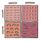
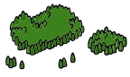
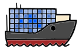
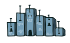
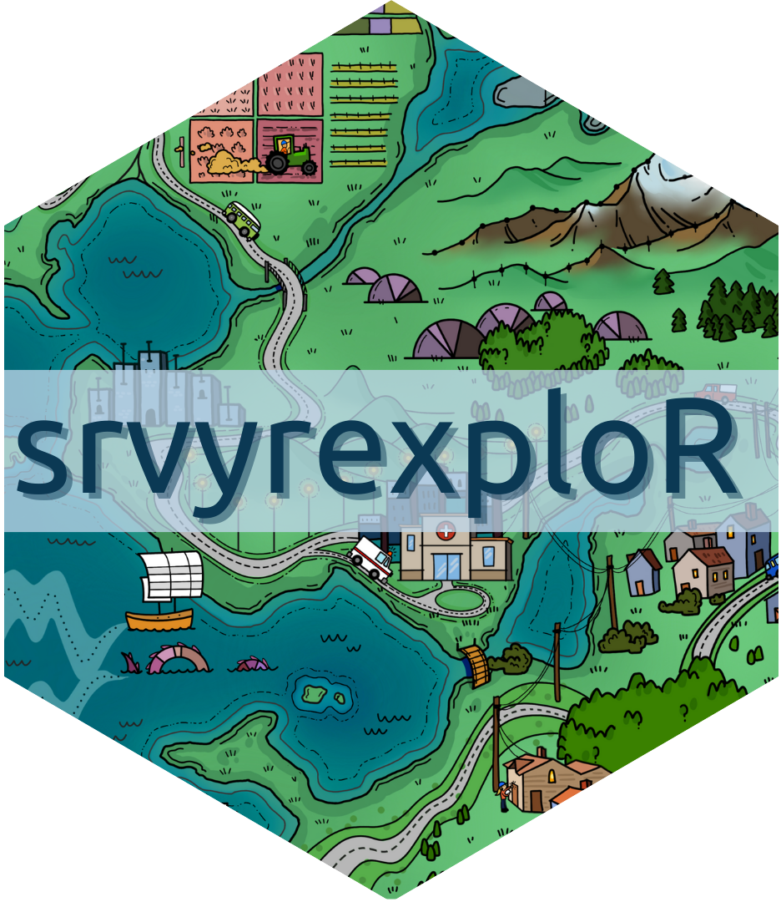
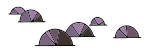

Tidyverse principles
Uses familiar tidyverse style synax to analyze survey data with the {srvyr} package.
Tidyverse principles


{About the book}
Surveys are powerful tools for gathering information, uncovering insights, and facilitating decision-making. However, to ensure the accurate interpretation of results, they require specific analysis methods.
In this book, readers embark on an in-depth journey into conducting complex survey analysis with the {srvyr} package and tidyverse family of functions from the R programming language. Intended for intermediate R users familiar with the basics of the tidyverse, this book gives readers a deeper understanding of applying appropriate survey analysis techniques using {srvyr}, {survey}, and other related packages.
Featured datasets
| American National election Studies Demographics and voting |
ANES |
| Residential Energy Consumption Survey Energy and housing |
RECS |
| National Crime Victimization Survey Public safety |
NCVS |
| AmericasBarometer Public opinion |

Tidyverse principles

Statistical understanding
Public, reproducible data
End-to-end examples
{Get the book}
Published by Chapman & Hall / CRC Press. Available in hardcover, paperback, and eBook.
PRINT & EBOOK
RETAILERS

{Companion data package}
Examples throughout the book use publicly available datasets. Most of these datasets are included in the R package {srvyrexploR} available on GitHub.
library(tidyverse)
library(survey)
library(srvyr)
library(srvyrexploR)
targetpop <- 231592693
anes_adjwgt <- anes_2020 %>%
mutate(Weight = Weight / sum(Weight) * targetpop)
anes_des <- anes_adjwgt %>%
as_survey_design(
weights = Weight,
strata = Stratum,
ids = VarUnit,
nest = TRUE
)
{About the authors}